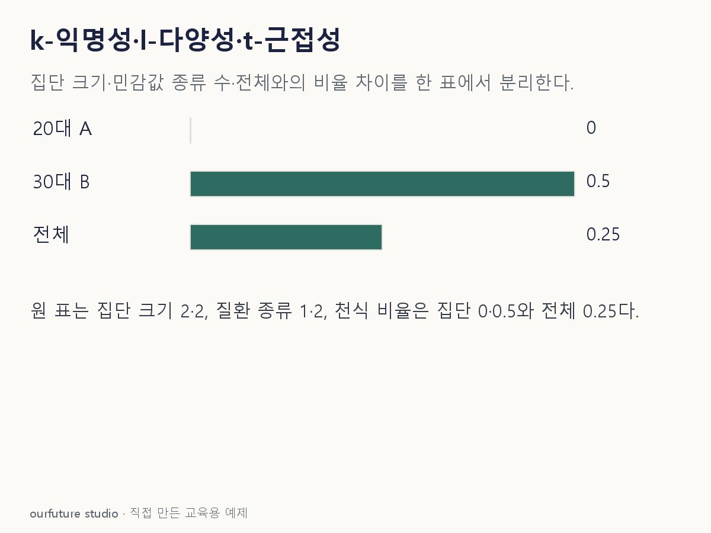

조건을 바꾸며 확인하기
한 사람 한 행·준식별자 두 개·민감값 두 종류·두 값 거리1인 자체 표에만 적용한다. 일반 범주형 EMD나 법적 익명성을 자동 판정하지 않는다.
설명 그림과 비교하기
아래 그림과 표는 고정된 설명 예제입니다. 기본·변형 중 어떤 조건인지 캡션을 읽고, 바꾼 입력의 결과는 계산 칸에서 확인하세요.

같은 문제를 직접 골라 보기
준식별자는 연령대·지역이다. (20대,A)의 두 행 질환은 모두 감기, (30대,B)의 두 행은 감기·천식이다.
조건을 더 바꾸면?
첫 집단의 질환 하나를 천식으로 바꾸면 distinct l=2는 충족하는가? 또 임의의 t를 자동 충족하는가?
변형 풀이 확인
distinct l=2를 충족한다. 이 변경 표에서는 두 집단과 전체의 질환 비율이 각각 1:1이라 적절한 분포 거리도 0이다.
l 충족 사실만으로 t를 자동 확정하는 것이 아니라 실제 분포가 같음을 확인했다. 일반적인 표에서는 거리 정의와 t를 명시해 따로 계산해야 한다.
k는 집단 크기, l은 민감값 다양성, t는 전체와의 분포 거리.